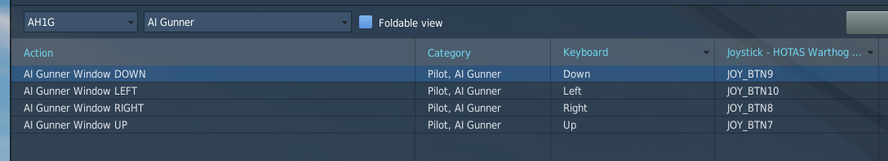
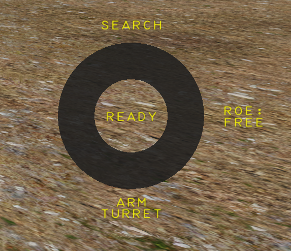
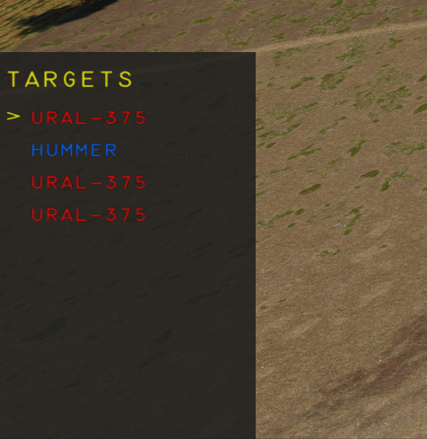

AI Gunner#
Doug#
We have named our gunner Doug, after our voice actor and SME "Doogie". Doogie has had a distinguished US Navy Rotary Wing career, now flying Hueys in a SAR role in the civilian world (see his YouTube for some awesome content). On the side, Doogie flies an S model Cobra for a musuem, and his feedback has been valuable in validation functionality and performance.
Keybinds#
The AI Gunner needs 4 keybinds, this works best on a 4-way HAT switch on a HOTAS. These keys will be used to navigate the menu, select targets, and perform various actions.

Activation#
The AI Gunner is enabled any time the pilot seat is occupied, and the front seat does not have a second player.
The Gunner Menus are only visible when the gunner has control of the turret. This can be done via the Turret Priority Switch in the UP position.
Menus#
Pie Menu#
The Pie menu on the right hand side of the screen is an indicator of what each button press will do.

In the above example, pressing UP will perform a target search, RIGHT will change the ROE mode, and DOWN will configure the turret arming / power switches in the front seat.
The text in the center of the circle indicates the status of the gunner.
Target Selection Window#
When a target search is successful, and targets are found, a window will pop up in the bottom left corner, with a target list, sorted in order by distance.

The selection carrot on the left hand side can be moved up and down using the UP and DOWN keys, and use RIGHT to engage / disengage a target. LEFT will return to the previous menu, to allow for another search.
Target Search#
When conducting a target search, the gunner will look for targets +/- 25 degrees of azimuth either side of the pilots head direction at the moment the search is initiated, out to a range of 5000 meters. Line of sight is accounted for, so if you can't see them on your screen, its likely that the gunner won't see them either.
Warning
TODO these numbers are likely to change, update them at release to be accurate
This is currently version 1, and lots will be changed and improved, please give me lots of feedback